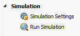

Simulation 環境は、Flow Navigator で [Run Simulation] をクリックするか、[Tcl Console] ウィンドウで launch_simulation を実行すると開きます。Simulation 環境を作成するため、Vivado ツールでは RTL ソース ファイルとテストベンチがコンパイルされ、シミュレーション スナップショットが開始されます。詳細は、『Vivado Design Suite ユーザー ガイド : ロジック シミュレーション』 (UG900) のこのセクションを参照してください。
Simulation 環境が既に開いている場合は、Flow Navigator の [Simulation] をクリックするとアクティベートできます。
|
Simulation 環境からは、次が実行できます。
|
 |
関連項目
 |
Vivado® デザイン ハブ - ロジック シミュレーション |
 |
Vivado Design Suite QuickTake ビデオ : ロジック シミュレーション |